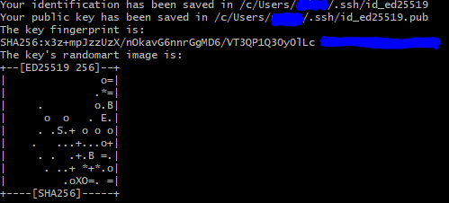
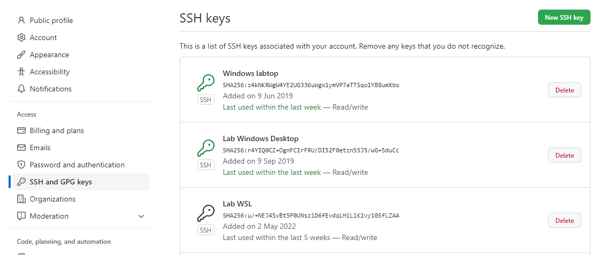

SSH 키 생성 및 GitHub에 등록
GitHub을 이용하려면 SSH 키를 생성하여 GitHub에 등록하는 과정이 필요하다.
- 터미널을 실행한다.
ls ~/.ssh를 입력하여id_ed25519또는id_rsa가 있는지 확인한다.
만약 존재한다면 3 ~ 6 과정을 생략해도 좋다.ed25519또는rsa방식으로 새로운 키를 생성한다.ed25519방식을 권장한다.ssh-keygen -t ed25519 -C "[your_email@example.com]" ssh-keygen -t rsa -b 4096 -C "[your_email@example.com]"- 어느 위치에 저장할 것인지 물어보는데, enter 키를 입력하면 기본값으로 설정되어 넘어간다.
- 비밀번호(passphrase)를 입력하라고 물어본다. 그냥 enter 키를 입력하면 비밀번호 없이 사용 가능하지만, GitHub 에서는 비밀번호를 설정하는 것을 권장한다.
- 한번 더 비밀번호를 입력한다. 같은 비밀번호를 입력하되, 이전에 빈 비빌번호로 넘어갔다면 또 enter 를 누르면 된다.
- 이제 다음 사진처럼 출력되면서
~/.ssh/폴더 안에 SSH 키가 생성되었다.ed25519방식의 경우id_ed25519와id_ed25519.pub파일이 생성된다. (rsa의 경우id_rsa,id_rsa.pub)id_ed25519파일은 private key로 절대 다른 사람에게 공개되어서는 안 된다!id_ed25519.pub파일은 publick key로 다른 사람들에게 공개되어도 상관 없다.  id_ed25519의 내용물을 복사한다.
Windows에서는cat ~/.ssh/id_ed25519.pub | clip, macOS 에서는cat ~/.ssh/id_ed25519.pub | pbcopy를 입력하여 복사 가능하다.- GitHub에 접속하여 Sign in 한다.
- 아래 사진처럼 상단 오른쪽에 있는 자신의 초상화를 클릭하고 "Settings"를 클릭한다.

- 아래 사진처럼 "SSH and GPG keys" 메뉴로 들어간다. 
- 오른쪽 위에 있는 초록색 "New SSH key" 버튼을 클릭한다.
- 아래 사진처럼 "Title"에는 자신이 알아볼 수 있도록 제목을 넣고, "Key"에는 위에서 복사한
id_ed25519.pub의 내용물을 붙여넣는다.
필자는 개인적으로 "Title"에 컴퓨터 종류를 적는다.
- 아래 초록색 "Add SSH key" 버튼을 클릭한다.
이제 이 컴퓨터에서 SSH를 통한 GitHub 접근이 가능하다!